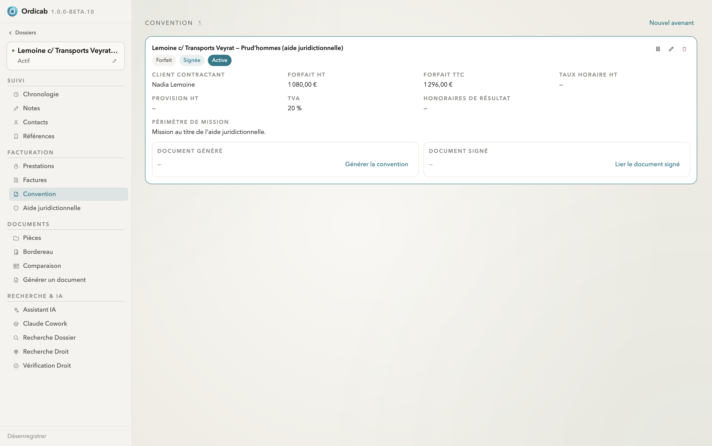
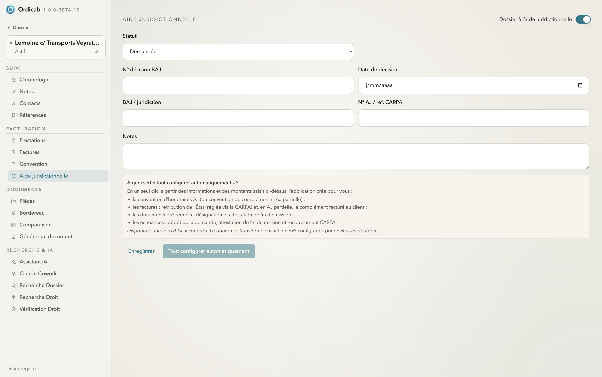
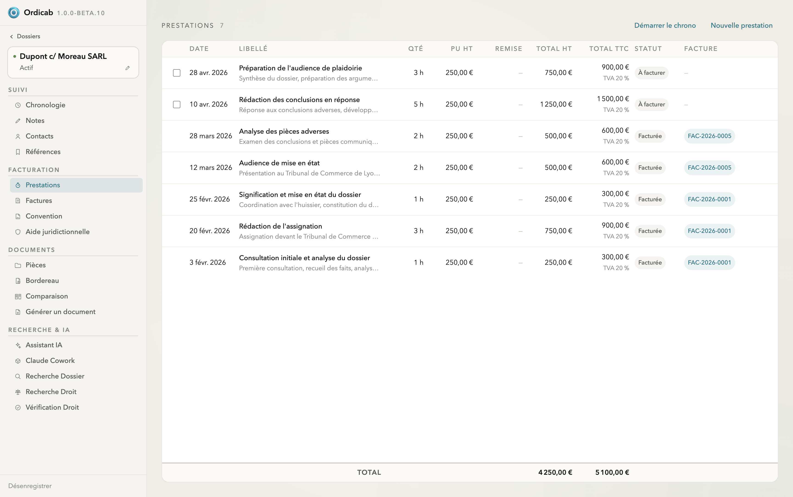
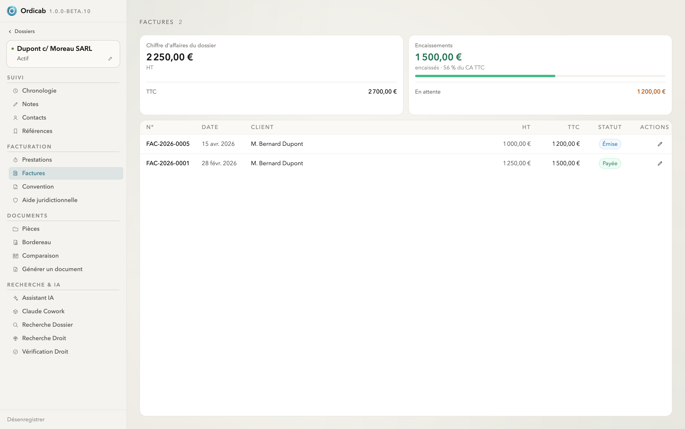
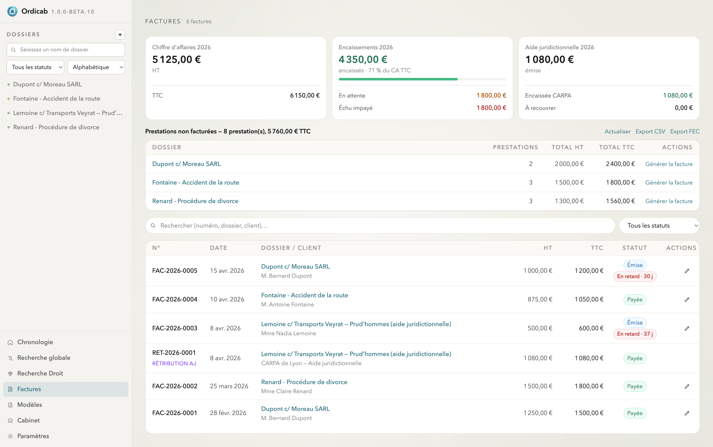

Facturation & honoraires
Ordicab relie convention, prestations et factures : vous décrivez les modalités d'honoraires une fois, saisissez le travail au fil de l'eau, et les factures se préparent sans ressaisie. Un tableau de bord au niveau du cabinet consolide le tout.
Convention d'honoraires
L'onglet Convention formalise les modalités de la mission : type (forfait, temps passé, résultat, mixte), client contractant, forfait HT/TTC, taux horaire, TVA, honoraires de résultat et périmètre de mission. Une convention peut être marquée Signée et Active, et vous pouvez lier le document signé.

Convention d'honoraires — modalités, forfaits, TVA et périmètre de mission
Aide juridictionnelle
Quand un dossier est à l'aide juridictionnelle, activez le suivi dédié : statut (demandée, accordée…), n° de décision du BAJ, date, juridiction et référence CARPA. Le bouton « Tout configurer automatiquement » aligne d'un clic la convention, les compléments d'honoraires, les factures de rétribution et les échéances.

Aide juridictionnelle — suivi de la décision du BAJ et configuration automatique
Prestations
Saisissez le travail effectué au fil de l'eau : date, libellé, quantité, prix unitaire, remise éventuelle. Chaque ligne calcule son total HT/TTC et porte un statut (À facturer / Facturée). Les prestations « à facturer » alimentent directement vos factures.

Prestations — saisie du travail effectué, totaux et statut de facturation
Factures du dossier
L'onglet Factures récapitule, pour le dossier, le chiffre d'affaires, les encaissements et le reste en attente, puis la liste des factures avec leur statut (Émise, Payée…). Les factures se génèrent à partir des prestations non facturées.

Factures du dossier — indicateurs et liste des factures émises
Vue consolidée du cabinet
Au niveau du cabinet, la page Factures agrège l'ensemble : chiffre d'affaires de l'année, encaissements, suivi de l'aide juridictionnelle et de la CARPA, prestations non facturées par dossier, et toutes les factures avec leur statut. Un export CSV et FEC est disponible.

Factures du cabinet — indicateurs, prestations non facturées et registre des factures
Suivant : Documents & pièces →